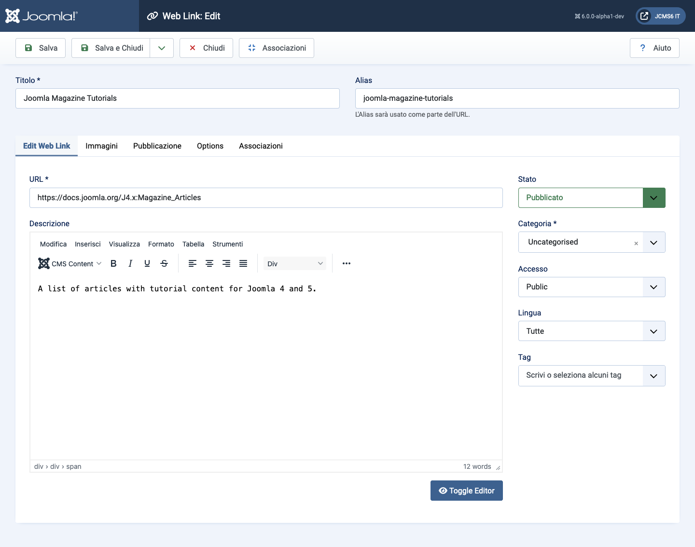
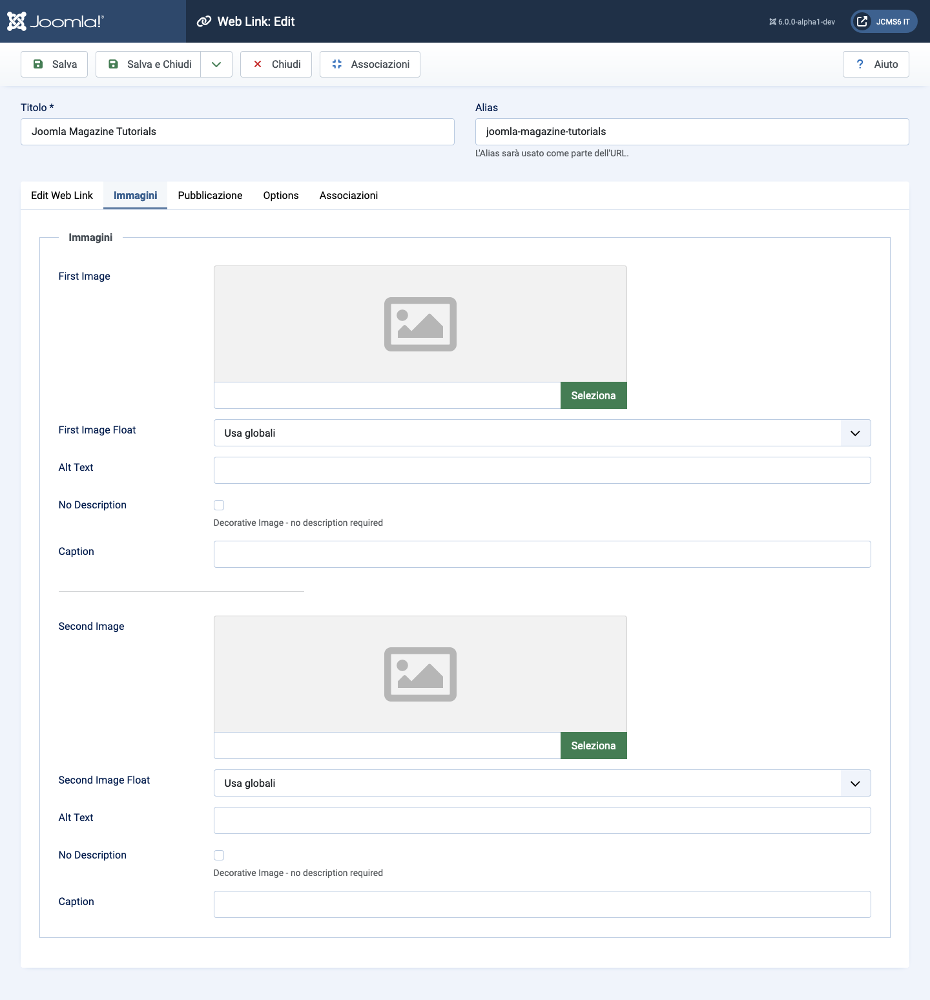
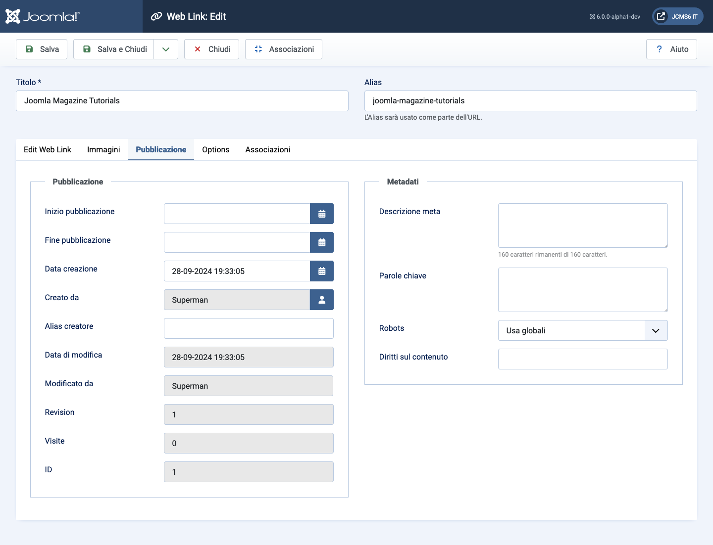
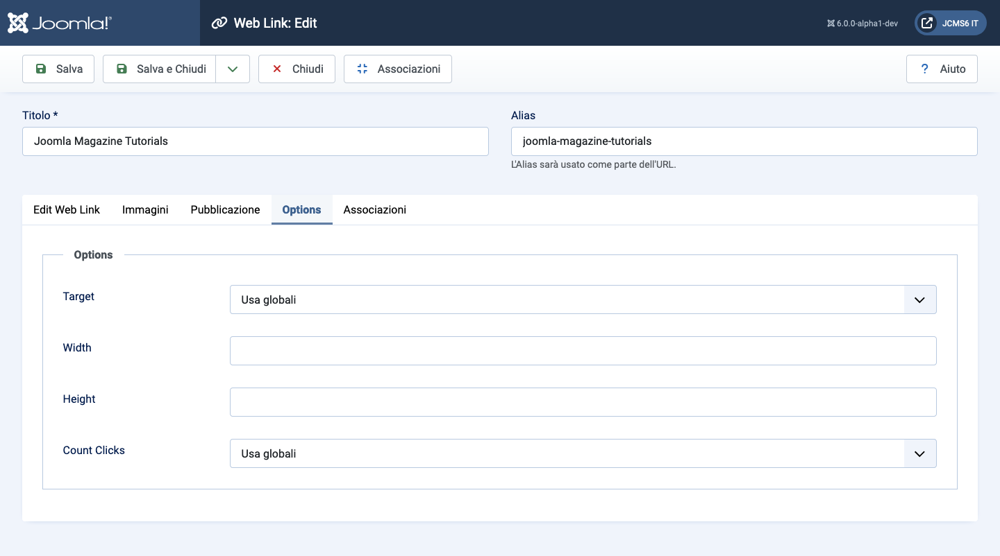

Joomla Help Screens
Web Link: Modifica
Descrizione
Questo modulo viene utilizzato per aggiungere un nuovo collegamento Web o modificare un collegamento esistente. Nota che è necessario creare almeno una categoria di collegamenti Web prima di poter creare il tuo primo collegamento Web.
Elementi Comuni
Alcuni elementi di questa pagina sono trattati in articoli di aiuto separati:
Come Accedere
- Seleziona Componenti → Web Links → Link dal menu dell'Amministratore. Poi...
- Seleziona il pulsante Nuovo nella Barra degli Strumenti per creare un nuovo link. Oppure...
- Seleziona un titolo nell'elenco dei link per modificare un link esistente.
Screenshot

Campi del Modulo
Pannello Sinistro
- URL L'URL del Link Web.
- Descrizione La descrizione per l'elemento. Le descrizioni di Categoria, Sottocategoria e Link Web possono essere mostrate sulle pagine web, a seconda delle impostazioni dei parametri. Queste descrizioni vengono inserite utilizzando lo stesso editor utilizzato per gli Articoli.
Scheda Immagini

- Prima Immagine Clicca su Seleziona per selezionare un'immagine da visualizzare con questo elemento nel front end.
- Posizionamento Immagine Dove posizionare l'immagine rispetto al testo nella pagina.
- Testo Alternativo Testo alternativo da utilizzare per i visitatori che non hanno accesso alle immagini. Questo testo viene sostituito con il testo della didascalia se è disponibile del testo per la didascalia.
- Didascalia La didascalia per l'immagine.
- Seconda Immagine Clicca su Seleziona per selezionare un'immagine da visualizzare con questo elemento nel front end.
- Posizionamento Immagine (Usa Globale/Destra/Sinistra/Nessuno). Dove posizionare l'immagine rispetto al testo nella pagina.
- Testo Alternativo Testo alternativo da utilizzare per i visitatori che non hanno accesso alle immagini. Questo testo viene sostituito con il testo della didascalia se è disponibile del testo per la didascalia.
- Didascalia La didascalia per l'immagine.
Scheda Pubblicazione

- Inizio Pubblicazione Data e ora di inizio della pubblicazione. Utilizza questo campo se vuoi inserire contenuti in anticipo e poi farli pubblicare automaticamente in un momento futuro.
- Fine Pubblicazione Data e ora di fine della pubblicazione. Utilizza questo campo se desideri che i contenuti vengano automaticamente cambiati in stato Non Pubblicato in un momento futuro (per esempio, quando non sono più applicabili).
- Data di Creazione Questo campo predefinito è impostato all'ora attuale quando l'Articolo è stato creato. Puoi inserire una data e ora diverse o cliccare sull'icona del calendario per trovare la data desiderata.
- Creato Da Nome dell'Utente Joomla! che ha creato questo elemento. Questo sarà predefinito all'utente attualmente loggato. Se desideri cambiarlo in un diverso utente, clicca sul pulsante Seleziona Utente per selezionare un utente diverso.
- Alias dell'Autore Questo campo opzionale ti permette di inserire un alias per questo Autore per questo Articolo. Questo ti permette di visualizzare un nome Autore diverso per questo Articolo.
- Data di Modifica (Solo informativa) Data dell'ultima modifica.
- Modificato Da (Solo informativa) Nome utente che ha effettuato l'ultima modifica.
- Revisione (Solo informativa) Numero di revisioni per questo elemento.
- Visite Il numero di volte in cui un elemento è stato visualizzato.
- ID Questo è un numero di identificazione unico per questo elemento assegnato automaticamente da Joomla!. Viene utilizzato per identificare l'elemento internamente, e non puoi cambiare questo numero. Quando crei un nuovo elemento, questo campo visualizza 0 fino a quando non salvi la nuova voce, momento in cui viene assegnato un nuovo ID.
- Meta Descrizione Un paragrafo opzionale da utilizzare come descrizione della pagina nell'output HTML. Generalmente verrà visualizzato nei risultati dei motori di ricerca. Se inserito, crea un elemento HTML meta con un attributo name di "description" e un attributo content uguale al testo inserito.
- Meta Parole Chiave Inserimento opzionale di parole chiave. Devono essere inserite separate da virgole (ad esempio, "gatti, cani, animali domestici") e possono essere inserite in maiuscolo o minuscolo. (Ad esempio, "GATTI" combacerà con "gatti" o "Gatti").
- Riferimento Esterno Un riferimento opzionale utilizzato per collegarsi a fonti di dati esterne. Se inserito, crea un elemento HTML meta con un attributo name di "xreference" e un attributo content uguale al testo inserito.
- Robot Le istruzioni per i "robot" del web che navigano su questa
pagina.
- Usa Globale: Utilizza il valore impostato in Componente→Opzioni per questo componente.
- Indice, Segui: Indicizza questa pagina e segui i link in questa pagina.
- Non indicizzare, Segui: Non indicizzare questa pagina, ma segui comunque i link nella pagina. Ad esempio, potresti fare questo per una pagina della mappa del sito dove desideri che i link vengano indicizzati ma non vuoi che questa pagina appaia nei motori di ricerca.
- Indice, Non seguire: Indicizza questa pagina, ma non seguire alcun link nella pagina. Ad esempio, potresti fare questo per un calendario eventi, dove desideri che la pagina appaia nei motori di ricerca ma non desideri indicizzare ogni evento.
- Non indicizzare, non seguire: Non indicizzare questa pagina né seguire alcun link nella pagina.
- Diritti sui Contenuti Descrivi quali diritti altri hanno per utilizzare questo contenuto.
Scheda Opzioni

- Destinazione Come aprire il link. Le opzioni sono:
- Apri nella finestra principale. Apri il link nella finestra del browser corrente, permettendo la navigazione Indietro e Avanti.
- Apri in una nuova finestra. Apri il link in una nuova finestra del browser, permettendo la navigazione Indietro e Avanti.
- Apri in popup. Apri il link in una finestra popup.
- Modale. Apri il link in una schermata modale.
- Larghezza Larghezza della finestra IFrame. Inserisci un numero di pixel o inserisci una percentuale (%). Ad esempio, "550" significa 550 pixel. "75%" significa 75% della larghezza della pagina.
- Altezza Altezza della finestra IFrame. Inserisci un numero di pixel o inserisci una percentuale (%). Ad esempio, "550" significa 550 pixel. "75%" significa 75% dell'altezza della pagina.
- Conteggio Click Se tenere traccia o meno di quante volte è stato aperto questo link web.
Tradotto da openai.com